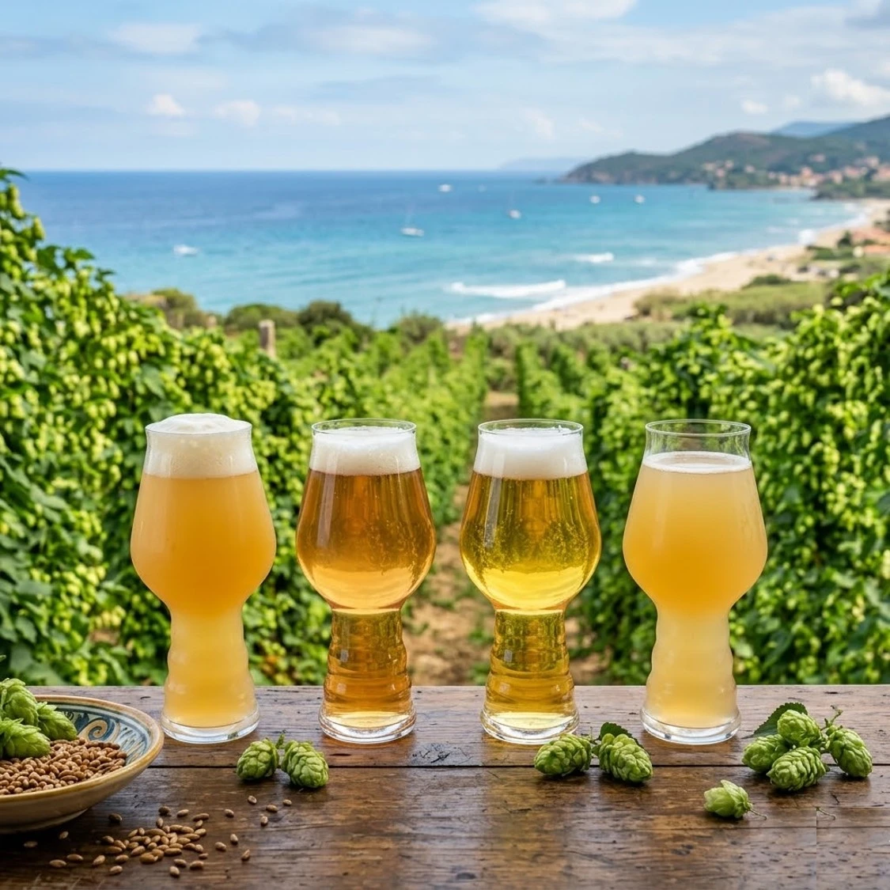

DEGUSTAZIONI PASSATE

Birre d’A-Mare: Sfumature di luppoli.
Firenze, Luglio 2026
Come si possono esprimere i luppoli nei diversi stili..

Birre d’A-Mare: Freschezza e acidità.
Firenze, Luglio 2026
Birre acide introvabili dal Belgio e non solo…

BIRRE TRAPPISTE, Firenze, Gennaio 2026
Un viaggio nella storia e nel gusto delle abbazie trappiste. Tradizione e qualità senza tempo...

BIRRE DI NATALE, Firenze, Novembre 2025
Una serata magica dedicata alle produzioni natalizie più esclusive. Scopri i sapori delle feste...

SAKE MONDAY con SCUOLA ITALIANA SAKE – Maggio 2025
L'incontro perfetto tra il Giappone e la birra artigianale. Un'esperienza sensoriale unica...

ABBINAMENTO BIRRE presso LA DEGNA TANA Pistoia, Aprile 2025
Accostamenti gastronomici ricercati nella splendida cornice de La Degna Tana...

BIRRA ARTIGIANALE ITALIANA da CALICE H Firenze, Luglio 2024
Celebriamo l'eccellenza dei birrifici indipendenti del nostro territorio...

ABBINAMENTO BIRRA E CUCINE ASIATICHE presso CALICE H Firenze, Maggio 2024
Spezie, sapori esotici e luppolo: come abbinare le birre ai piatti d'Oriente...

MASTERCLASS: LA BIRRA ARTIGIANALE GIAPPONESE con SCUOLA ITALIANA SAKE Firenze, Aprile 2024
Due serate per un affascinante viaggio di approfondimento tecnico e degustazione della cultura brassicola nipponica...